꺼진 모니터가 한 대씩 켜지고 여덟 시선이 서로 다른 화면을 고른다.
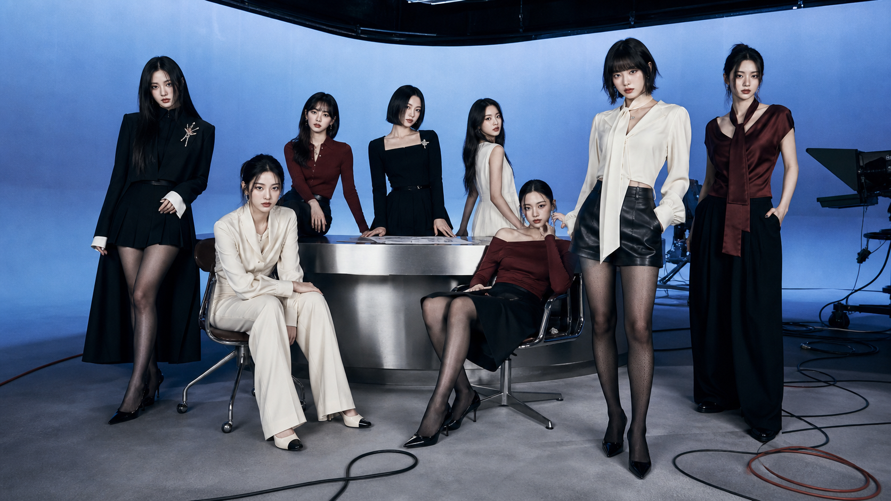
HEARTS2HEARTS · 3RD MINI ALBUM PROPOSAL
SAMEPAGE
여덟 명이 같은 답을 내는 것이 아니라,
서로 다른 시선으로 하나의 장면을 완성한다.
WHY NOW연결 다음은
연결 다음은
공유된 관점
지금까지의 하츠투하츠가 만남, 우정, 자기표현, 집중, 태도, 여름의 에너지를 보여줬다면 다음 앨범은 여덟 명의 관계가 만든 ‘합’을 보여준다. 말보다 빠르게 통하는 팀의 실제 강점을 음악의 주고받는 구조와 카메라 릴레이로 번역한다.
01 / ARTIST DNA이미 가진 것에서
이미 가진 것에서
다음 장면을 찾았다.
많은 포메이션과 멤버 사이의 상호작용은 이 팀만의 가장 큰 화면 자산이다.
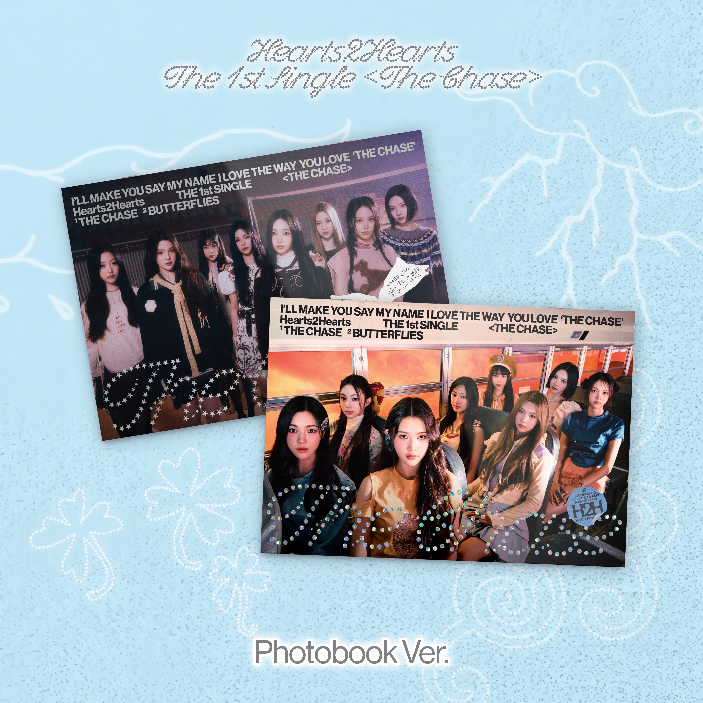
부드러운 R&B 감도는 유지하고, 이번에는 표정과 동작을 더 날카롭게 잡는다.
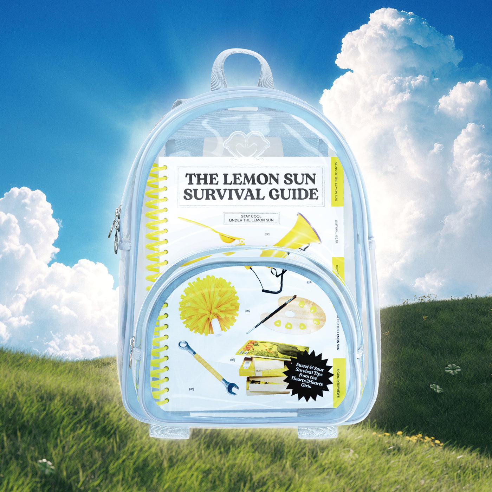
밝은 에너지를 버리지 않되 아이스 블루와 옥스블러드로 한 단계 정제한다.
02 / MUSIC같은 멜로디를
같은 멜로디를
여덟 방식으로 이어 부른다.
TITLE TRACK
SAME PAGE
반짝이는 2000년대 댄스 팝 후렴에 세련된 R&B 보컬과 UK garage 리듬을 얹는다. 한 멤버가 끝낸 단어를 다음 멤버가 이어받고, 마지막 후렴에서 여덟 목소리가 한 문장으로 합쳐진다.
- 01LINE OPEN1:12
- 02SAME PAGE3:18 · TITLE
- 03CUT TO ME2:54
- 04SIDE B3:06
- 058:083:31
IAN 저음 인트로YUHA 멜로디 시작STELLA 스포큰 전환JUUN 댄스 브레이크CARMEN 클라이맥스8인 코러스
03 / MUSIC VIDEOPRIVATE
PRIVATE
BROADCAST
방과 후나 판타지 세계가 아니다. 방송이 끝난 새벽, 여덟 멤버가 빈 스튜디오를 점유하고 자신들만의 생방송을 완성한다.
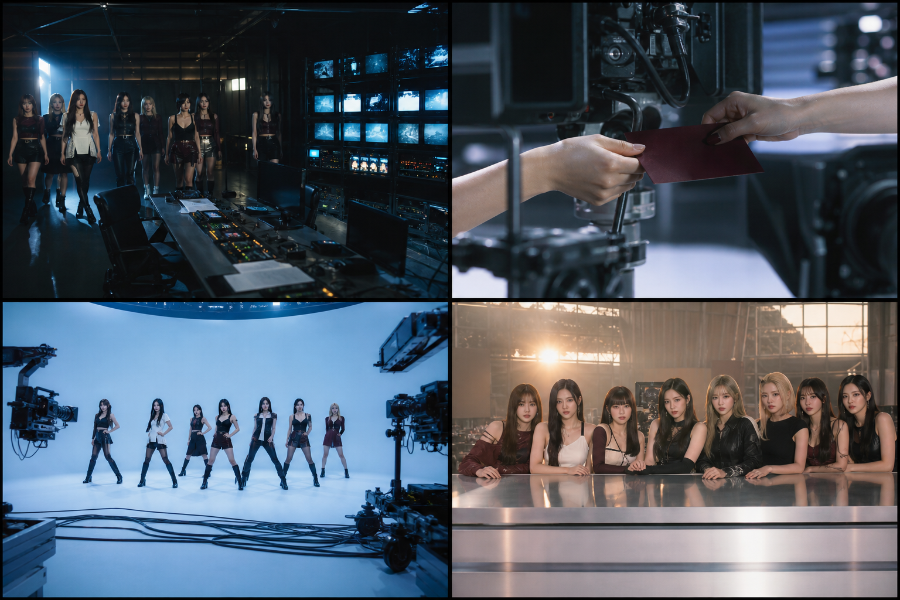
옥스블러드 큐카드가 프레임 밖으로 나가 다음 세트의 손으로 이어진다.
카메라와 케이블을 숨기지 않은 채 8인 포메이션을 롱테이크로 촬영한다.
동이 틀 때 여덟 명이 한 카메라를 바라보며 송출 화면을 직접 종료한다.
04 / 8 MEMBERS한 색을 나누지 않고
한 색을 나누지 않고
한 규칙을 다르게 입힌다.
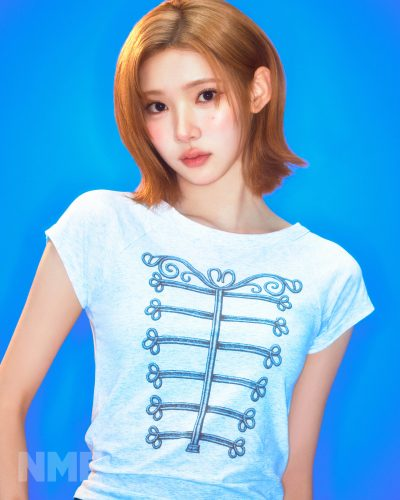
JIWOO균형의 중심
롱 코트 · 정면 50mm · 8인 마스터컷의 축
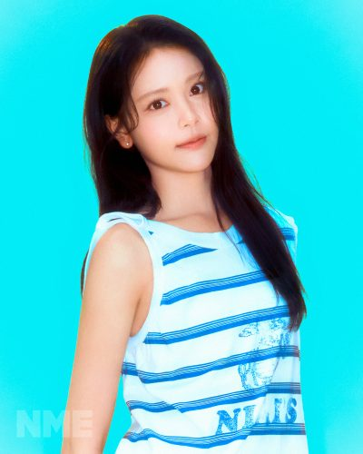
CARMEN감정의 절정
아이보리 수트 · 웜 클로즈업 · 마지막 고음
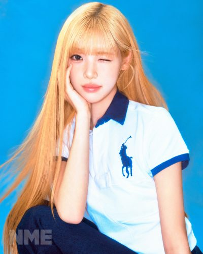
YUHA서사의 시작
옥스블러드 니트 · 피아노 손동작 · 첫 멜로디
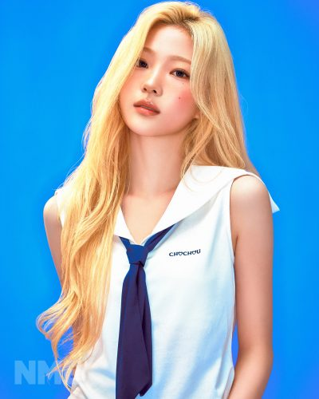
STELLA말의 전환
블랙 드레스 · 렌즈 직시 · 스포큰 브리지
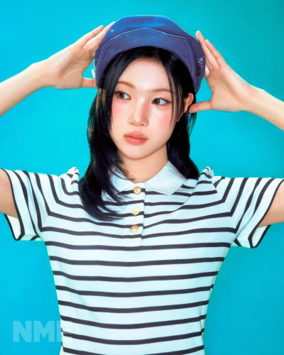
JUUN움직임의 축
레더 쇼츠 · 로 앵글 · 포메이션 전환
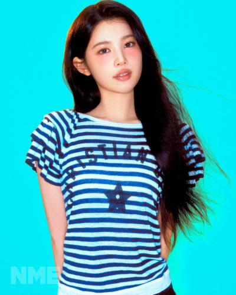
A-NA화면의 비율
롱 실루엣 · 와이드 프레임 · 정적인 긴장
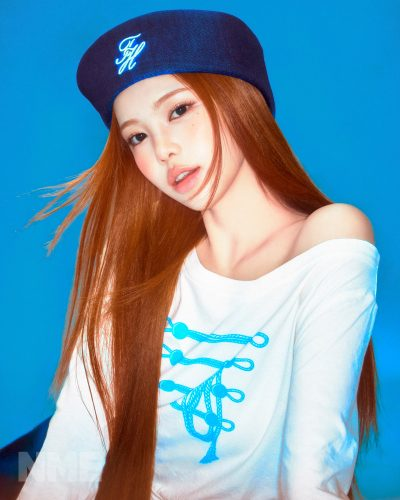
IAN낮은 온도
크롭 재킷 · 타이트 크롭 · 저음 인트로
YE-ON선명한 결말
아이보리 칼럼 · 정면광 · 마지막 시선
PAIR RELAY
두 멤버를 고르면 촬영 연결 동작이 만들어집니다.
SELECT 02PAIR DIRECTION
두 멤버를 선택하세요.
MEMBER PORTRAIT REFERENCES · NME / WONYOUNG KI, 2026
05 / JACKET카메라가 보이는
카메라가 보이는
재킷.
세트를 감추지 않는다. 촬영 장비와 케이블을 프레임 안에 남겨 ‘우리의 화면을 우리가 만든다’는 태도를 키 비주얼로 만든다.
SAME
PAGE
PAGE
CROP
LIGHT
MARK
ART DIRECTOR DESK촬영 조건을 선택해
촬영 조건을 선택해
한 장의 브리프로 묶습니다.
FORMATION
LENS
LIGHT
LIVE PRODUCTION BRIEFGROUP 8 · 50MM · FLASH
여덟 명을 하나의 비대칭 포메이션으로 두고 카메라 장비까지 와이드 프레임에 포함한다. 하드 플래시로 인물과 세트의 표면을 동시에 선명하게 잡는다.
06 / STYLINGBROADCAST
BROADCAST
TAILORING
인터넷식 ‘코어’ 하나를 복제하지 않는다. 같은 팔레트 안에서 길이, 비율, 광택, 노출을 멤버별로 달리해 한 팀과 개인을 동시에 읽히게 한다.
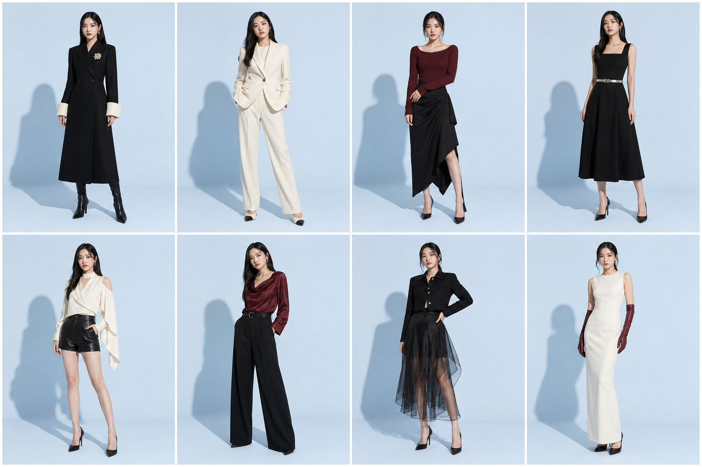
ICE BLUEINK BLACKWARM IVORYOXBLOODSILVER
롱 2 · 미디 2 · 쇼트 2 · 트라우저 2
광택은 통일, 가르마와 묶음 높이는 개인화
차가운 피부, 옥스블러드 포인트, 얇은 아이라인
브로치·벨트·글러브 중 하나만 선택
07 / PACKAGE한 상자 안의
한 상자 안의
여덟 채널.
장식물을 늘리는 대신 방송 아카이브라는 사용 경험을 만든다. 포토북, 8인 카드, 채널 가이드, 큐카드, NFC 튜닝 참이 같은 그래픽 규칙을 공유한다.
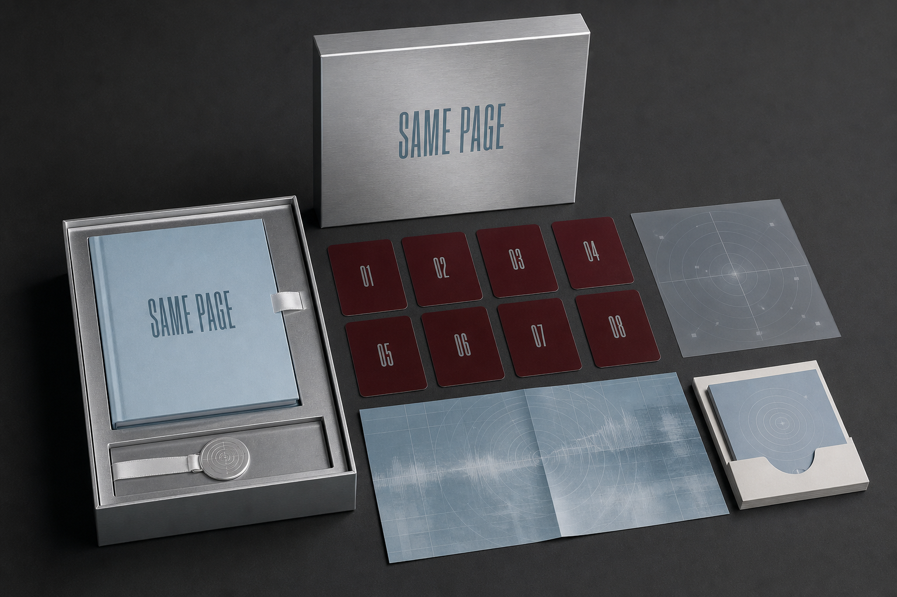
01실버 아카이브 박스02160P 포토북038인 채널 카드04접지 방송 포스터05NFC 튜닝 참
08 / PROMOTION공개할수록
공개할수록
한 화면이 된다.
멤버별 8초 무음 화면. 시선 방향만으로 다음 멤버의 영상을 가리킨다.
두 멤버가 한 문장을 반씩 가진 페어 포스터 4종.
팬이 카메라 1–8을 바꾸며 안무 포메이션을 선택하는 숏폼.
여덟 개 세로 화면이 합쳐져 최종 재킷을 완성하는 웹 공개.
8 WORDS / PROMOTION INTERACTION
순서대로 눌러 마지막 문장을 완성하세요.
_ _ _ _ _ _ _ _